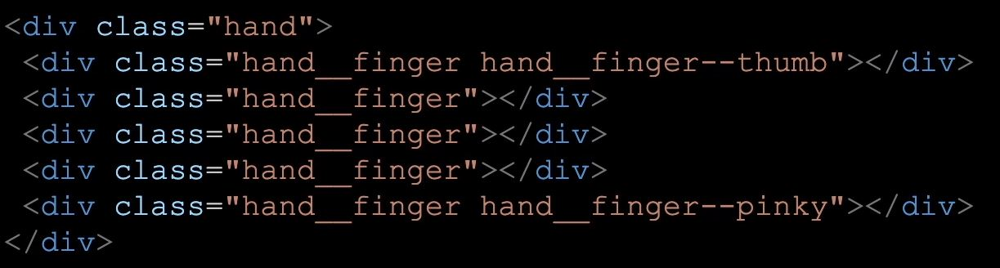
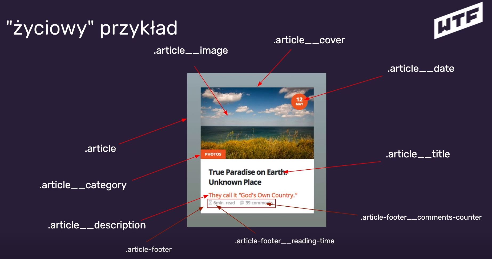
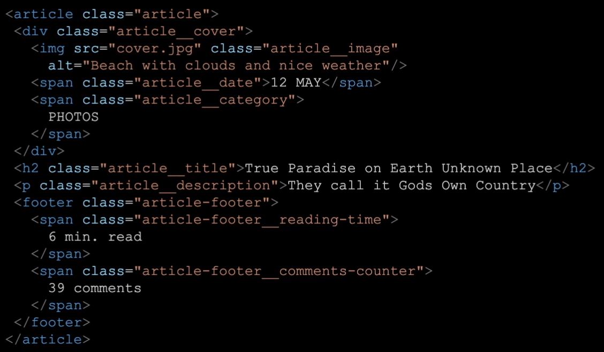
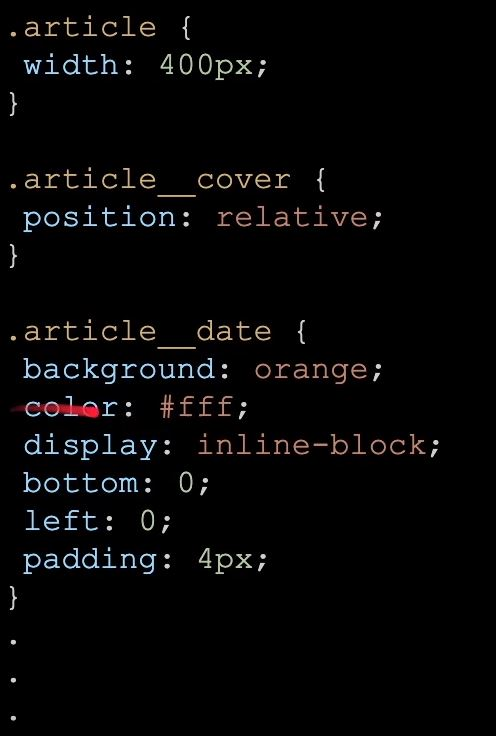

Tydzień 1
-
Slack – słyszałem o nim wcześniej, ale nigdy na poważnie nie używałem. Okazuje się, że to całkiem
fajne narzędzie do codziennej pracy.
-
Ścieżka rozwoju – bardzo często o tym myślałem (co jeszcze powinienem się nauczyć, w którą stronę
pójść), a tutaj znalazem do tego fajną stronę:
ścieżka rozwoju
Tydzień 2
-
Semantyczny HTML – dowiedziałem się, że pisanie HTML nie jest wcale łatwe, a pisanie dobrego HTML’a
to sztuka. Semantyczny HTML oznacza HTML mający znaczenie. W tym przypadku bardzo ważne jest
wykorzystywanie takich znaczników, które nadają odpowiednie znaczenie „swojej wewnętrznej treści”.
-
main – główna część dokumentu (pliku HTML)
-
section – sekcja dokumentu (tutaj, np. „Notatki z WTF…”)
-
article – samodzielne treści (tutaj, np. pojedynczy tydzień)
- header – nagłówek - dokumentu / sekcji / artykułu
- footer – stopka - dokumentu / sekcji
-
h1 … h6 – tekstowe nagłówki tytułowe - dokumentu / sekcji
- p – paragraf / akapit
-
Walidator kodu HTML – okazuje się, że poprawność pisanego HTML można łatwo sprawdzić pod tym
adresem:
sprawdź poprawność HTML
-
Dokumentacja HTML’a
Tydzień 3
-
Kanban – metodologia kanban, polega na planowaniu i organizowaniu wykonywanych czynności, z
podziałem na listę zadań do wykonania, aktualnie wykonywanych i zadań wykonanych. Okazuje się, ze
nieświadomie od dawna wykorzystuje podobne schematy, których zadanie jest takie samo, czyli usprawnić
wykonywanie różnych czynności, lepiej zorganizować czas w ciągu dnia itp.
-
Trello – wykorzystywałem kiedyś w projekcie na studiach, jednak wtedy nie zauważyłem potencjału
tego prostego narzędzia. Pozwala tworzyć dowolną liczbę tablic, a w nich różnych kategorii zadań –
narzędzie m.in. metodologii kanban. Obecnie korzystam „pełną parą” z potencjału tej prostej aplikacji :)
-
Semantyczny HTML cd.
-
br – nowa linia – nie stosujemy do „robienia dużych odstępów”
-
b, i – wyróżnienie (jedynie wizualne) fragmentu z tekstu otaczającego, bez większego znaczenia
semantycznego
-
strong – pogrubienie tekstu, podkreśla wysoką istotność i poważność frazy w nim zawartej
-
em – kursywa, tekst może mieć inne znaczenie (np. ironia)
-
a href, target – linki zewnętrzne / łącza wewnątrz dokumentu (kotwice) – „opis „ powinien mieć
określone znaczenie do czego prowadzi „przejdź do notatek” zamiast, np. „czytaj dalej” itp.
-
img src, alt – zdjęcie, atrybut alt jest ważny nie tylko w przypadku nie odnalezienia zdjęcia w
źródle, ale również dla czytników ekranowych
- Nazwy plików – kebab-case (małe litery z pauzami)
-
Atrybuty globalne
-
CSS
-
!important – nie powinno się go używać! „Psuje” całą „hierarchię” stylowania (specyficzność)
-
Style inline – pisane w HTML,
nie powinno się ich używać!
-
Specyficzność – hierarchia stylowania, wygrywają style z najwyższą specyficznością, tzn. nadpisują
pozostałe style. W przypadku remisu, aplikowane są style „bliżej” elementu (najpóźniej zdefiniowane)
-
Klasy – zalecane do stylowania, bez zagnieżdżeń, pojedyncze, dobrze nazwane klasy per element (nie
zwiększaj specyficzności bez potrzeby), klasa nawet do pojedynczego elementu danego typu

-
Coolors.co – narzędzie do łatwego tworzenia palet kolorów -
stwórz paletę kolorów
-
JavaScript
-
Java != JavaScript
-
EcmaSctipt – specyfikacja, z której czerpie JavaScript, (ES6+) = EcmaScript 2015+ to obowiązujący
standard JS (nowy JavaScript), stale rozwijany (EcmaScript 2020) itp.
-
Wartości – wartości dla JS, są tym czym liczby dla matematyki
-
Operacje porównywania
-
Literały – łączenie wartości ze zmiennymi w postaci jednego ciągu znaków
-
Zmienne – zapisujemy jako camelCase
-
Obiekty
-
Funkcje
-
script - znacznik dla kodu JS w HTML, zawsze na samym końcu (body /body), nie zalecane pisanie kodu JS
w HTML’u
-
Backtick / backquote (`) – „kopnięty apostrof” – służy do tworzenia literałów
Tydzień 4
-
GIT – narzędzie do kontroli wersji
-
git config --global user.name „Daniel Moskal” – ustawienie globalnej nazwy użytkownika
-
git config --global user.email daniel19967@gmail.com
– ustawienie globalnego maila użytkownika
git config --get user.name – sprawdzenie ustawionej nazwy użytkownikagit config --get user.email – sprawdzenie ustawionego adresu email użytkownika-
Repozytorium = projekt
-
Commit = stan projektu + opis zmian
git init– utworzenie repozytoriumgit status – sprawdza status aktualnego repozytorium-
git add [file/.] – dodaje pliki do repozytorium (śledzi zmiany), „.” – dodaje wszystkie
pliki z bieżącego katalogu
git commit –m „opis” – utworzenie commita w historii repozytoriumgitk – uruchamia graficzną reprezentacje repozytorium gita-
git / git lens - dodatki „gita” w Visual Studio Code (na początku najlepiej wykonywać wszystko w
konsoli, żeby się „oswoić”)
-
Github
-
GitHub != Git – tak samo jak Pornhub != Porn
-
git remote add origin [adres] - podłączenie lokalnego repo z repo zdalnym (origin) pod
podanym adresem
-
git push –u origin master – “wypchnij” główną gałąź (master) zmian do repo zdalnego
(inicjalizacja zmian w zdalnym repo)
-
git push – “wypchnij” zmiany do repo zdalnego (synchronizacja „na bieżąco” zmian w
zdalnym repo)
-
CSS – wyświetlanie, wymiary elementów, przycinanie „wystającej” treści
-
div - nie ma znaczenia semantycznego, używamy gdy chcemy coś „opakować” (tylko kiedy nie istnieje
odpowiedni semantyczny znacznik), często używany do stylowania – nie nadużywać!
-
display – określa sposób wyświetlania elementu na stronie
-
Block – element zajmuje całą szerokość ekranu, nawet jeżeli jego zawartość nie potrzebuje
tyle miejsca, domyślny dla znaczników section, article, div itp.
Łączy się z właściwościami width, height, max-width, min-height itp.
-
Inline – element zajmuje tyle miejsca ile potrzebuje jego zawartość. Pozwala na
wyświetlanie elementów w jednym wierszu, domyślny dla znaczników a, span itp.
NIE Łączy się z właściwościami width, height, max-width, min-height itp.
-
Inline-block - łączy cechy „inline” I “block”, tzn. wyświetla element tak jak „inline”, ale
łączy się również z właściwościami width, height, max-width, min-height itp.
-
width, height – określa stałą szerokość / wysokość elementu
blokowego (display: block)
-
max-width, max-height – określa maksymalną szerokość / wysokość elementu blokowego, jeżeli jest
mniejsza to element zajmuje tyle miejsca ile jest dostępne - 100%
Uwaga – w celu ograniczenia tekstu, trzeba wykorzystać inne właściwości, np. overflow.
-
min-width, min-heigth – określa minimalną szerokość / wysokość elementu blokowego, jeżeli jest
więcej miejsca, to element zajmuje cały dostępny obszar – 100%
-
overflow – pozwala na „odcinanie” treści „wystającej” za element (np. ograniczony przez width /
height / max-width / max height itp.
- hidden – ucina / ukrywa tekst poza elementem (boxem, kontenerem)
-
visible – nie ucinamy zawartości, jeżeli się nie mieści, to „wystaje” poza kontener
(wartość domyślna)
-
auto – wprowadza ograniczenie do max wysokości / szerokości kontenera, wprowadzając
scrolla
-
CSS - jednostki
- 0 – zapisujemy bez jednostek
- px – piksele
-
% - ustala szerokość / wysokość kontenera na procentową część obszaru
RODZICA (kontenera nadrzędnego)
-
vw, vh – viewport width / height– działa na zasadzie jednostki „%” jednak w odniesieniu do
całego okna, czyli kontenera głównego (root’a) – fajne, przydatne jednostki
-
CSS - box model (padding, border, margin)
- padding – wewnętrzny margines, jest częścią elementu
- border – obramowanie element, jest częścią elementu
- border-radius – pozwala zaokrąglać obramowanie (parametr to długość promienia)
-
margin – margines, „o ile się odsunąć od innych elementów”, nie jest częścią elementu
-
działa całościowo(we wszystkie strony) tylko z „display: block”
-
działa tylko dla szerokości z „display: inline / inline-block”
-
nie sumuje (nakłada) się z marginesem sąsiedniego elementu dla inline / inline-block (tylko
szerokość)
-
nakłada się z marginesem sąsiedniego elementu dla block (tylko wysokość?)
-
margin: 0 auto – automatycznie pozostawi z lewej strony taką samą część marginesu
(wyśrodkuje), zadziała tylko w przypadku gdy margines faktycznie jest, czyli jeżeli kontener
zajmuje mniej niż 100% szerokości / wysokości rodzica.
-
CSS - box-sizing
-
content-box – zdefiniowane wartości wysokości / szerokości dotyczą jedynie zawartości
(contentu) elementu, nie uwzględniając paddingu i bordera (wartość domyślna)
-
border-box – tak samo jak content-box, z tym że wysokość / szerokość jest określana sumarycznie
dla całego kontenera wraz z paddingiem i borderem – przydatne, gdy ustawimy, np. width: 100% i
padding: 30px, wtedy cały element (box) zawsze będzie miał 100%, a zmniejszy się proporcjonalnie
zawartość (content)
-
CSS - position
-
position: static – domyślne pozycjonowanie elementów na stronie (brak możliwości „ręcznego”
przemieszania elementów)
-
position: relative (wypowiadamy RELATIVE a nie „RILAJTIW”) - pozycja relatywna / zależna,
otwiera możliwość korzystania z innych „position”, np. „absolute”
-
position: absolute
-
pozwala na umieszczenie danego elementu w jasno określonym miejscu (tak jak na układzie
współrzędnych), czyli np. 20px od góry i 50% z lewej.
-
„Układem współrzędnych” w tym przypadku czyli kontenerem bazowym, jest rodzić z ustawionym
„position: relative”. Możemy „wyjeżdżać” elementem „absolute” poza rodzica „relative”.
-
Gdy żaden rodzić nie ma „relative” to „układem współrzędnych” jest znacznik body (okno
przeglądarki).
-
Do przesuwania elementu stosowane są właściwości: top, right, bottom, left.
-
Dodatkowo ustawienie „position: absolute” ogranicza szerokość elementu do jego zawartości,
podobnie jak „display: inline-block” (można ręcznie dodawać własności width / height). Gdy nie
przesuniemy elementu, np. od góry / dołu (top / bottom), to pomimo „absolute” element będzie się
starał zachować wysokość zależną od innych „współelementów”.
- top – odsunięcie elementu od góry o daną wartość [px, % itp.]
- rigth – analogicznie, odsunięcie elementu od prawej
- bottom – analogicznie, odsunięcie elementu od dołu
- left – analogicznie, odsunięcie elementu od lewej
-
z-index – „kolejność wyświetlania” – w artością jest liczba całkowita, która określa „numer
warstwy”, na której znajduje się element. Im wyższy numer, tym wyższa warstwa na „stosie warstw”.
Jeżeli elementy „zasłaniają się nawzajem”, to widoczny jest ten na wyższej warstwie, (wyższa wartość
z-index). W przypadku tej samej warstwy (równy z-index), widoczny jest ten element, który został
zdefiniowany później (w kodzie).
-
position: fixed – działa na zasadzie „absolute”, ale kontenerem bazowym zawsze jest znacznik
body (okno przeglądarki) oraz taki element jest „przyklejony na stałe” w danym miejscu okna
przeglądarki (w przypadku scrolla, porusza się razem z nim). Przydatny do tworzenia różnego rodzaju
menu, które ma być cały czas widoczne.
-
position: sticky
- zajmuje szerokość całego wiersza (na zasadzie „display: block”)
- wykorzystuje tylko właściwość „top”, pozostałe ignoruje
- wykorzystywana tylko w przypadku „scrollowania”
-
„przykleja” element do ekranu, w momencie przewijania, w odległości „top” od górnej krawędzi okna
-
„odkleja” element od ekranu, jeżeli przewijanie (górna krawędź okna) „wyjadą” poza zakres elementu
- przydatne do „przyklejania”, np. nagłówków artykułów
-
Can i use – sprawdzenie, które przeglądarki wspierają daną właściwość -
sprawdź czy wspierane
-
CSS - float
-
NIE SŁUŻY DO BUDOWANIA LAYOUTÓW!
-
Służy do opływania elementów (generalnie w danym kontenerze)
-
Element z „float” zachowuje się jak „inline-block” – szerokość = szerokość zawartości
-
Można definiować wysokość / szerokość takiego elementu
- float: left – „chcę być z lewej strony, a wszystko niech mnie opływa z prawej”
- float: right – „chcę być z prawej strony, a wszystko niech mnie opływa z lewej”
-
nie jest ograniczany przez kontener (rodzica), np. jeżeli ma większą wartość „height” niż kontener, to
„wyjedzie” poza niego, w celu ograniczenia rozmiarów elementów float do rozmiarów kontenera możemy
wykorzystać właściwość „clear” na nowym elemencie lub „overflow” na kontenerze
-
clear – „czyści” wpływ „float” na kolejne elementy
- left, right, both – czyści wpływ od lewego, prawego albo obu floatów
-
„clear” jako ostatni element w kontenerze (w którym jest „float”), spowoduje, że kontener
uwzględni „floata” w swoim obszarze (w przypadku gdy na sztywno ograniczymy rozmiar kontenera i
„nie obejmuje” on elementu „float” trzeba zastosować „overflow” na kontenerze rodzicu – nie
potrzeba wówczas elementu „clear” na końcu kontenera)
-
„clear” jako element na kolejnym kontenerze spowoduje, że kolejny kontener pojawi się dopiero za
obszarem „wpływu” floata z poprzedniego kontenera (uwaga w tym przypadku float może „wychodzić”
poza poprzedni kontener „rodzica”)
-
overflow – dodany na kontenerze zawierającym „float”, ograniczy jego obszar, do obszaru
kontenera, nawet gdy element „float” normalnie „wychodzi” poza kontener
-
JS - typy danych i immutability
- var – historyczne, obecnie nie należy tego używać!
- const – zmienne mające stałe połączenie z jedną wartością
- let – zmienne, których połączenie możemy przepinać (definiujemy tylko raz)
-
JS nie jest silnie typowany, zmienne mogą być raz typu „numer”, raz „string” itp. Do danej zmiennej
możemy przypisywać wartości różnych typów
-
Typy proste w JS (primitives)
- String – tekst
- Number – liczba
- Bigint – duża liczba > 2^53
- boolean – true / false
- null – wartość celowo niezdefiniowana
- undefined – brak definicji
- *symbol – tworzy “unikalne opakowanie”
-
null vs undefined – zmienna wskazuje na nic (null) vs nic nie wskazuje na daną zmienną (undefined)
- typeof zmienna/wartość – sprawdzenie typu dla podanej zmiennej / wartości
-
immutability – niezmienność – nie możemy zmieniać wartości „primitives values”. To co zmieniamy to
połączenie między nimi, a zmiennymi
-
VSCode - formatowanie kodu i lokalny serwer
- dodatek „Prettier” – formatowanie kodu HTML, CSS i JS itp.
-
dodatek „Likve Server” – pozwala uruchamiać lokalny serwer, a na nim nasz projekt, który automatycznie
się odświeża po zapisaniu zmian w plikach
-
BEM - Block – Element – Modifier, konwencja nazewnictwa styli w CSS
-
Dlaczego?
- Problem wysokiej specyficzności
- Problem z logicznym nazywaniem klas
- Brak ujednoliconego sposobu stylowania
- Importanty, nadpisywanie rzeczy
- Brak odwzorowania struktury HTML w CSS
- Stylowanie kilkoma klasami, powtarzające się nazwy klas
- Block – nadrzędny element
- Element – część bloku (nie musi być bezpośrednim dzieckiem)
-
Modifier – modyfikator – jeśli element / blok występuje w kilku wariacjach tworzymy dodatkową klasę
- Nazewnictwo klas: block__element--modifier, np.

-
Generalnie stosujemy jedną klasę do elementu / bloku, wyjątkiem jest użycie modyfikatora, wówczas
dajemy klasę bazową (element / blok), a po niej klasę modyfikującą (modifier)
-
„Życiowy przykład”

- „Życiowy przykład” – HTML


-
Nie tworzymy w CSS wielu klas do opisu jednego elementu (nie zwiększamy niepotrzebnie specyficzności)
-
W BEM w CSS wszystkie klasy zapisujemy osobno, a nie jako „.article .article__cover” – większa
czytelność itp.
-
DOMowe przedszkole
- DOM = Document Object Model – obiektowy model dokumentu, „złożony” w przeglądarce HTML
- Plik HTML to nie DOM
- Źródło strony to nie DOM
- To co widzimy w DevTools’ach to już DOM
-
JS bardzo lubi DOM i może go modyfikować
-
domElement = document.querySelector(‘.selector’) – dostanie się do elementu(node, węzeł) z
poziomu JS (selektor definiujemy tak samo jak w CSS) – zalecana metoda wyciągania elementów z DOM
- $(‘.selector’) – odpowiednik w jQuery
-
można wykorzystywać klasy w konwencji BEM, np. „.selector—js” – ta klasa nie służy do stylowania,
a jedynie pozwala na dostęp do DOM za pomocą JS Stosowanie osobnych klas „dostępowych” zapobiega
„nie działaniu” skryptów przy zmianie klasy do stylowania
-
domElement.innerHTML – dostęp do treści elementu pobranego z DOM – nie jest to popularna praktyka
podmiany treści w HTML